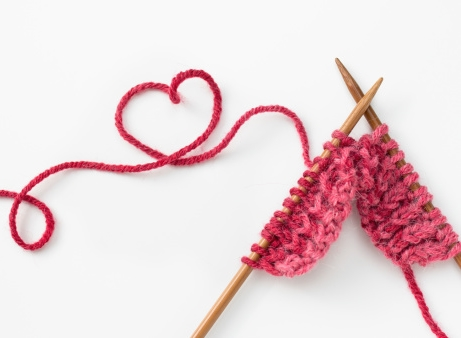
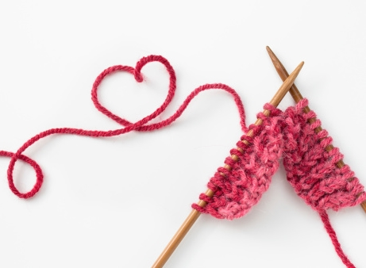

YarnBee is a family-owned craft business in the Nashville community. Our goal is to provide our customers with the yarn and needlework brands they know and love including Lion, Red Heart, Lily Sugar 'N Cream, Caron, Bernat, Clover, Boye and many more! Visit us today and let us help you find what you need for your next project.

 
